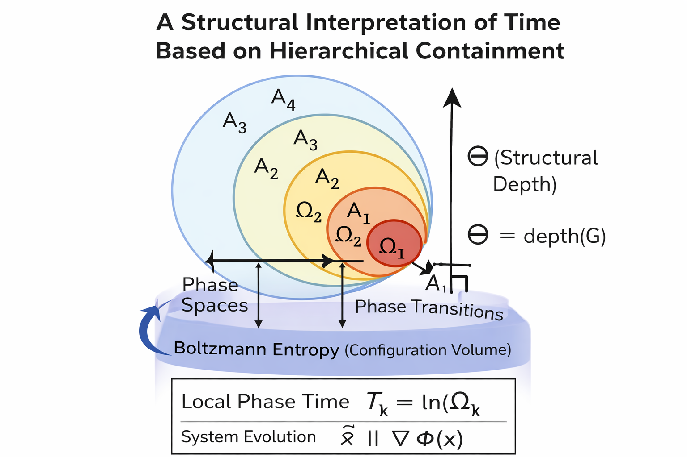

H. I. Guven
Time is not treated as a fundamental entity in this work. It is a derived representation arising from the structural organization of hierarchical relations.
The direction of time is commonly associated with entropy growth in thermodynamic systems. While entropy describes the statistical distribution of configurations, it does not measure the hierarchical organization emerging in complex systems.
This work proposes a structural interpretation based on hierarchical containment. Local temporal measurements correspond to configuration volume while global ordering corresponds to structural depth.
T_k = ln(Ω_k)
Θ = depth(G)
A_k ⊂ A_{k+1}
Within this framework the apparent arrow of time emerges from the irreversible growth of hierarchical containment.

Time is represented by structural depth under observational projection.
Entropy measures configuration diversity while structural depth measures the accumulation of hierarchical organization across phases.
H. I. Guven
Bu çalışmada zaman temel bir varlık olarak ele alınmaz. Zaman, yapısal ilişkilerin gözlem altındaki türevsel bir temsilidir.
Zamanın yönü genellikle termodinamik sistemlerde entropi artışı ile açıklanır. Ancak entropi yalnızca konfigürasyon çeşitliliğini ölçer; karmaşık sistemlerde ortaya çıkan hiyerarşik organizasyonu doğrudan ölçmez.
Bu çalışma hiyerarşik kapsama yapıları üzerinden bir yorum sunar. Yerel ölçüm konfigürasyon hacmine karşılık gelir.
T_k = ln(Ω_k)
Küresel düzen ise yapısal derinlik ile temsil edilir.
Θ = depth(G)
Sistem organizasyonu kapsama zincirinin genişlemesiyle ortaya çıkar.
A_k ⊂ A_{k+1}
Zaman, yapısal derinliğin gözlem altındaki temsilidir.
Entropi konfigürasyon çeşitliliğini ölçer. Yapısal derinlik ise organizasyon katmanlarının birikimini ölçer.